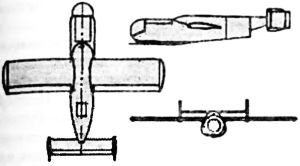
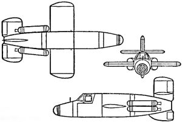
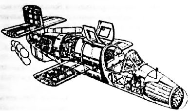

Конкурсные ракетопланы
Наличие в Германии огромного числа всевозможных ракетных и реактивных проектов объяснялось тем, что к 1944 году многие немецкие фирмы стали разрабатывать самолеты в инициативном порядке. К тому же обычной практикой было объявление Техническим управлением Люфтваффе открытых конкурсов на разработку конкретных машин. На конкурс принимались только детально проработанные проекты, которые в случае успеха почти немедленно могли быть реализованы в опытные образцы или прототипы. В результате получалось, что конкурс выигрывал всего один проект, но на соискание подавалось несколько десятков вариантов. Например, на конкурс по созданию так называемого «Народного истребителя» («Volksjager») были одновременно выставлены проекты шести ведущих немецких конструкторских бюро: «Хейнкель», «Юнкере», «Арадо», «Фокке-Вульф», «Блохм и Восс» и «Хортен». Нередко фирмы демонстрировали не просто проект, а одновременно несколько независимых его вариантов.
Постоянное участие авиастроительных фирм и КБ Третьего Рейха в многочисленных конкурсах привело к появлению большого количества достаточно проработанных конструкций реактивных и ракетных самолетов. И по сей день в немецких архивах времен Второй мировой войны можно отыскать описания совершенно фантастических летательных аппаратов, которые при ином развитии истории вполне могли бы стать основой для космической программы Германии.
Например, авиационная фирма «Арадо» («Arado») представила вниманию руководителей Третьего рейха проект «Аг Е-381». Это был одноместный истребитель, оснащенный ракетным двигателем «Walter HWK109-509А-2». Ракетоплан должен был подвешиваться под бомбардировочную версию самолета «Аг-234», с целью обеспечения истребительного прикрытия во время выполнения бомбардировочных задач. «Е-381» был рассчитан на то, чтобы в случае столкновения с самолетами противника отсоединиться от носителя, набрать дополнительную высоту и выполнить атакующий маневр. Собственного ресурса топлива должно было хватить на повторный заход. Предполагалось, что далее пилот сможет развернуться и планировать в сторону ближайшего аэродрома, где совершит посадку на подфюзеляжную лыжу. Внутри ракетоплана пилот располагался в положении лежа и был защищен 5-миллиметровым стальным корпусом, а также плексигласовым фонарем толщиной 140 миллиметров. Вооружение состояло из пушки «МК-108». Для обеспечения комфорта летчика во время продолжительного полета на большой высоте предусматривалась возможность подачи теплого воздуха из самолета-носителя.
Излишек произведенных ракетных двигателей «As014» для крылатых ракет «Фау-1» побудил Люфтваффе объявить конкурс на создание миниатюрного истребителя, который бы использовал эти двигатели. В рамках конкурса конструкторское бюро «Блохм и Восс» («Blohm und Voss») разработало проект ракетоплана «Р-213». Это был небольшой самолет длиной 6,2 метра, с деревянными крыльями размахом 6 метров. Передняя часть фюзеляжа состояла из двух половинок, отформованных из стальной брони. В верхней части размещалась пилотская кабина с каплевидным фонарем. На деревянной хвостовой балке крепилось «мотыльковое» оперение, скошенное вниз. Относительно небольшая тяга пульсирующего двигателя «As014» (всего 300 килограммов) требовала применения на старте катапульты или дополнительных ускорителей. Максимальная скорость полета ракетоплана на уровне моря составляла 700 км/ч, а на высоте 9000 метров — 450 км/ч, практический потолок — 10 километров. Вооружение проектировалось в виде одной пушки «МК-108».
Весьма обширную реактивную программу проводила и авиационная фирма «Фокке-Вульф» («Focke-Wulf»). Она принимала участие практически во всех крупных конкурсах Третьего рейха, а также спроектировала несколько машин в инициативном порядке.
На конкурс «Volksjager» («Народный истребитель») «Фокке-Вульф» представила самолет, напоминавший уменьшенную копию серийного истребителя «Та-183», но оснащенный жидкостным ракетным двигателем «Walter HWK 109–509». В корне крыла располагались две пушки «МК-108». Взлет планировалось осуществлять со стартовой тележки, а после выполнения задачи предусматривалась планирующая посадка Согласно расчетам, этот ракетоплан должен был набирать высоту 16500 метров за 100 секунд, а через 9 секунд после старта развивать скорость 650 км/ч.
Еще одной версией реактивного истребителя, над которой работало конструкторское бюро «Фокке-Вульфа», был «Jager Proekt VII» («Flitzer»). Отличительной особенностью «Проекта VII» являлась комбинированная силовая установка. Вместе с турбореактивным двигателем внутри фюзеляжа размещался жидкостный ракетный двигатель Вальтера.
В июле 1944 года Техническое управление Люфтваффе провело блиц-конкурс на создание реактивного истребителя-перехватчика, который бы мог мгновенно подыматься на высоту полета бомбардировщиков врага (10–11 тысяч метров), стартуя в зоне прямой их видимости. Наличие ЖРД в качестве силовой установки увязывалось заказчиком с рядом других требований: максимальной дешевизной производства, технологичностью и простотой в эксплуатации. Квалифицированных рабочих рук не хватало, и сложный в производстве самолет делать было просто некому.
Как и обычно, в конкурсе приняли участие почти все авиационные фирмы, за невероятно короткий срок предложившие свои варианты. Одно только конструкторское бюро Мессершмитта с июня по сентябрь представило четыре проекта одноместного истребителя с ракетным двигателем. Конструкторы «Арадо» представили свой проект «Е-381». «Хейнкель» — два похожих проекта: Р.1068 «Romeo» и Р.1077 «Julia». «Юнкерс» вообще сразу «выкатил» прототип «EF-127» («Wally»).
В августе 1944 года свой проект «ВР-20» представил инженер Эрик Бахэм из города Вальдзее, владелец фирмы «Бахэм-верке» («Bachem-Werke») по производству летного оборудования. Бахэм предложил строить одноместные одноразовые высокоскоростные ракетные истребители, вообще не требующие аэродрома, а взлетающие с передвижных вертикальных станков. Это решало сразу две задачи. Простота конструкции позволяла в кратчайшие сроки, даже под массированными бомбежками и при жесточайшем дефиците, наладить их выпуск десятками тысяч штук. А отсутствие потребности в аэродроме обеспечивало малую уязвимость перехватчиков от воздушных налетов. Мобильные подразделения могли быстро перемещать пусковые станки с места на место, оставаясь абсолютно незамеченными.
Сочетание этих факторов выгодно отличало предложение Эрика Бахэма от остальных вариантов, которые, в принципе, были обычными самолетами, требовавшими гораздо больших затрат и стандартного аэродромного обслуживания, что к концу 1944 года стало непозволительной роскошью.
Применение ЖРД в качестве силовой установки обеспечивало высокую скорость и, что самое важное, большую скороподъемность. Такая конструкция, согласно расчетам, имела все шансы относительно легко прорывать истребительное заграждение и атаковать бомбардировщики.
Опыт боевого применения «комет» Мессершмитта выявил недостаточную эффективность огнестрельного оружия. Получалось, что, быстро догнав объект атаки, скоростной самолет должен был либо снизить скорость и упорно молотить из всех стволов по врагу, либо вертеться вокруг, раз за разом повторяя атаки. В любом случае самолет терял свои важнейшие преимущества — скорость и внезапность.
В авиации 30-40-х годов одним из показателей истребителя являлся вес секундного залпа, который измерялся суммарным весом пуль и снарядов, выпущенных из всего бортового оружия в единицу времени. Понятно, что чем больше этот вес, тем больший урон будет нанесен противнику. По замыслу Эрика Бахэма, мгновенно сблизившись с целью, его истребитель должен произвести залп неуправляемыми ракетами с близкого расстояния (что гарантировало уничтожение цели сразу) и упасть вниз. В падении пилот рассоединял машину (для этого применялись пиропатроны с электрозапалом, размещенные в крепежных болтах) и спускался на индивидуальном парашюте. От истребителя в воздухе отделялся двигатель и также спускался на собственном парашюте для дальнейшего использования. Остальное считалось ненужным и разбивалось о землю. В качестве силовой установки предполагалось применить ракетный двигатель «Walter HWK109-509 А-1», изначально разработанный для «Ме-163».
Сам ракетоплан целиком изготавливался из дерева. Металлическими были лишь несколько элементов: топливный бак, двигатель и бронеплиты, защищавшие кабину пилота спереди и сзади. Толщина бронестекла достигала 6 сантиметров.
Представленная конструкция была настолько простой, что могла выпускаться в любой столярной мастерской рейха. К тому же, в отличие от обычного технологического процесса авиационного производства, «ВР-20» мог изготавливаться с широким привлечением низкоквалифицированного персонала и даже подростков.
Учитывая одноразовость применения, изначально заложенную в проект, ракетоплан не имел шасси. Перед взлетом его устанавливали на вертикальную мачту высотой 24 метра. Сначала мачта изготавливалась из дерева, но скоро стали рассматриваться варианты мобильных пусковых установок. Чтобы не тратить и без того малый бортовой запас топлива на взлет, «ВР-20» должен был разгоняться четырьмя сбрасываемыми ракетными ускорителями с тягой 2 тонны каждый. Они забрасывали машину на высоту 10 километров с вертикальной скоростью 800 км/ч, где уже включался собственный ракетный двигатель с тягой 1,7 тонны и запасом топлива на две минуты полета. Хотя стартовые перегрузки не превышали 2,5 g, на этапе разгона машина управлялась автопилотом или по радио с земли.
Планировались несколько вариантов ракетного вооружения, так как первоначальный проект установки всего двух пушек «МК-108» был явно недостаточен для гарантированного уничтожения огромного четырехмоторного бомбардировщика. Поэтому выбор пал на чисто ракетное вооружение, которое могло состоять из 46 ракет калибра 55 миллиметров «R4M», или 24 ракет калибра 73 миллиметра «Hs-217», или 33 ракет типа «Orkan», установленных в специальной пусковой установке в носовой части.



Заручившись поддержкой Технического управления Люфтваффе, Эрик Бахэм развернул кипучую деятельность, и уже в сентябре 1944 года состоялась продувка первой модели в аэродинамической трубе, а через месяц капитан Циттер выполнил полет на прототипе «Ва-349М1», который буксировался за бомбардировщиком «Не-111». Испытания показали хорошую управляемость ракетоплана, правда лишь на больших высотах и скоростях, что объясняется небольшими размерами несущих поверхностей крыла.
18 декабря 1944 года со стартовой вышки впервые взлетел беспилотный испытательный вариант, оборудованный ускорителями. Беспилотные варианты испытывались до конца января 1945 года и привели к окончательной доработке конструкции планера.
1 марта 1945 года был произведен запуск «Ва-349М23» в полностью готовом варианте, но почти сразу же после старта от перегрузок отвалилось остекление кабины и машина рухнула на землю. При ударе произошел сильный взрыв, и пилот, старший лейтенант Лютер Зиберт, погиб. До апреля 1945 года состоялось еще 34 полета, из которых семь пилотируемых прошли удачно.
Всего фирма Бахэма изготовила 34 машины «Ва-349» серий «А» и «В» и начала постройку еще трех машин серии «С» с более мощным двухкамерным двигателем «Walter HWK 509С-1». В апреле 1945 года несколько машин были даже полностью подготовлены к реальному боевому применению, но достаточно квалифицированных пилотов уже не нашлось, и новый ракетоплан «Ва-349» («Natter») так и не получил боевого крещения. К тому времени фронты окончательно развалились и то, что не удалось вывезти из-под оккупации, было уничтожено.
Тем не менее несколько готовых экземпляров достались американцам, а один захватила Красная Армия в Тюрингии.